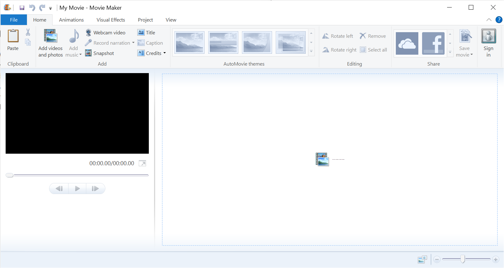

Go back to Homepage
How to get Windows Movie Maker in 2021
Windows Movie Maker has not been available for Download for quite some time. Luckily, somebody has extracted the Windows Movie Maker portion of a Windows Live Essentials Installer and edited it so that it runs on a Windows Version with Any Language. The File is not Official Microsoft but it is virus-free and works perfectly fine. The installation file is around 146mb and takes around 4 minutes to install. Click the Download button below the screenshot to initiate the download.

Windows Movie Maker looks a bit off in the screenshot because I have my Windows Scaling set to 150%
Download Windows Movie Maker
Watch my YouTube video on How To Install
The file is not hosted on my website, it is on an external server.